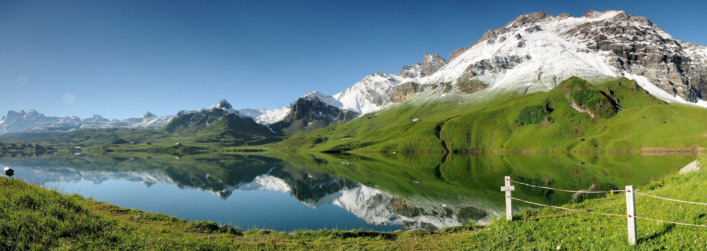
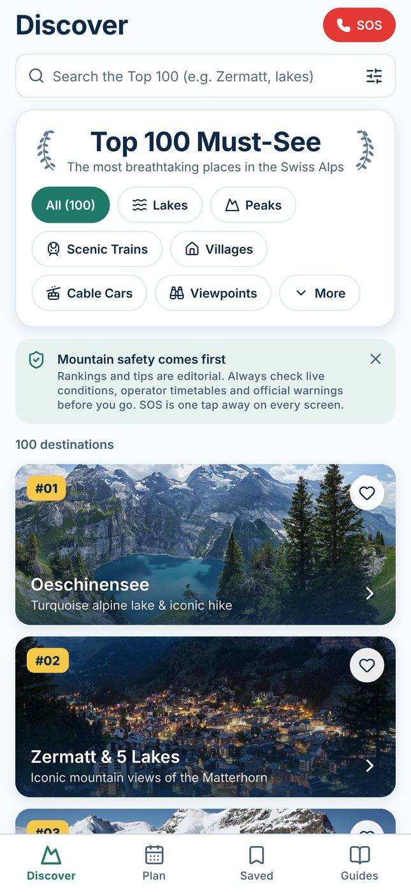
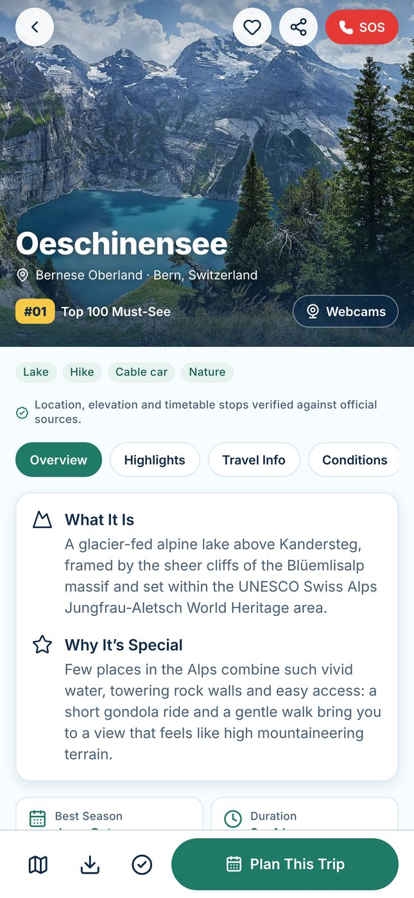
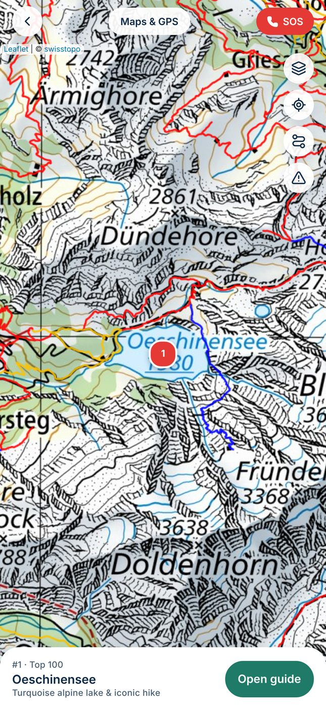

Gentian – Swiss Alps
Discover the Swiss Alps. Plan every connection.
An editorial Top 100 of Alpine lakes, peaks, villages and scenic railways, with car-free trip planning on the Swiss timetable, topographic maps and mountain conditions in one calm, focused app.
Photo: Melchsee-Frutt · public domain
Made for travellers without a car
Gentian answers two questions: which extraordinary Alpine places are worth your day, and how do you reach them by train, bus, boat and cable car?
Top 100 Must-See
An independent, ranked selection of destinations, each with a practical guide, highlights, season, duration and difficulty.
Car-free trip planner
Day trips built from live Swiss open-data timetable connections, with walking legs and time on site clearly marked as estimates.
Maps & conditions
swisstopo maps with hiking layers, forecasts at altitude, the SLF avalanche bulletin, official trail closures and webcam links.
Discover
100 places worth the journey
From glacier lakes to cog railways: browse by category, search, or filter by region, season, difficulty, time available and accessibility.
- What it is, why it’s special, highlights and things to do
- Step-by-step directions and links to official operators
- Family and dog suitability marked as official, editorial or unknown — never guessed

Plan
Every connection, door to lakeshore
Choose a starting point, date and time on site. Gentian stitches timetable connections — train, bus, cog railway, funicular, cable car — with the last walk to the viewpoint.
- Timetable legs come from the Swiss open-data timetable
- Walking times and visit time are labelled as estimates
- Save, share and refresh trips before you leave

Live webcams
See the mountain before you go
Valleys can sit in fog while summits are sunny. Many Top 100 destinations link to official operator webcams — summit and valley views where available — so you can check visibility before buying a ticket.
- Webcam pages open in your browser only when you tap
- Availability and image freshness depend on each operator

Inside the app
Screens from the current beta (web rendering of the app’s interface at iPhone size, with live data on 20 November 2026).




Mountain safety comes first
Gentian brings official sources together, but it never replaces them — or your own judgement.
- Forecasts, avalanche bulletins, closures and timetables come from third parties and can be delayed, incomplete or wrong.
- The SOS screen shows Swiss emergency numbers and your coordinates; calls use your phone’s network and need coverage.
- Read the full Terms of Use and safety information.
Availability
Gentian is currently in closed beta testing on iPhone through TestFlight. It is not yet available on the App Store. Features, availability and pricing may change before launch.